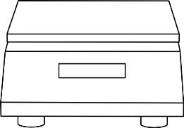
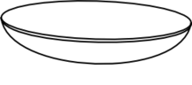
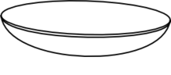
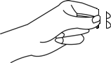
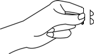
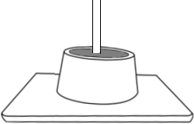

Standard Consistency of cement
Objective
To determine the standard consistency of given sample of cement by vicats apparatus.
Apparatus used:
Vicat apparatus with vicat plunger,vicat mould, measuring jar, weighing balance etc..


Take cement in a pan and measure 300gram of cement using the weighing balance.



00.00 g
300.00 g
Take about water by weigh of dry cement and mix it thoroughly with the cement. The gauging time should not be more than 3 to 5 minutes.
Quantity of water to be added = ( x 300 )/100
Quantity of water to be added = ml
Quantity of water to be added = ml


 



Fill the vicat mould resting upon non-porous plate.


Fix the 1mm2 vicat plunger and the place the mould under the test setup.


 


Initial Reading = 40mm
Lower the plunger to touch the surface of the mould and release it quickly to sink into the paste.



Final Reading =
Observations:
Quantity of water added = ml
Initial Reading = 40mm
Final Reading =
| Percentage of Water | Initial Reading in mm | Final Reading in mm |
|---|---|---|
| 26 | 40 | 28 |
| 28 | 40 | 19 |
| 30 | 40 | 11 |
| 32 | 40 | 6 |
Trial =